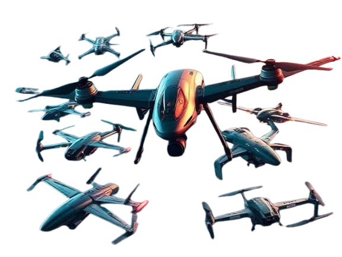

Inaccessible Terrain
Collapsed structures, flooded areas and blocked routes can prevent conventional reconnaissance.
EDITH-R3X // Aerial Surveillance Platform
DISASTER RESPONSE.
REIMAGINED.
An intelligent aerial surveillance platform engineered to provide rapid situational awareness in disaster environments.

Airframe visual pending
assets/edith-hero.png
02 — The Problem
Disaster zones can become inaccessible, unstable and dangerous within minutes. Response teams need information before they can safely act.
Collapsed structures, flooded areas and blocked routes can prevent conventional reconnaissance.
Smoke, darkness, debris and unstable environments can reduce the effectiveness of ground-based assessment.
Sending responders into unknown environments before understanding the situation can increase operational risk.
Airframe visual pending
03 — The EDITH Solution
EDITH-R3X is conceived as an aerial intelligence platform that can enter difficult environments, collect situational data and relay actionable information to response teams.
04 — Capabilities
Rapid aerial observation of disaster-affected environments.
Multi-modal sensing for improved environmental awareness.
Capture and relay information to support response decisions.
Designed around intelligent flight assistance and controlled operation.
Support communication of collected information to response teams.
Provide aerial intelligence where conventional access is difficult.
05 — Engineering
Every subsystem is designed around one requirement: reliable intelligence in environments where access is difficult.
Lightweight structural architecture designed for operational efficiency.
Explore lightweight materials such as carbon-fibre composites where appropriate.
Efficient propulsion architecture for controlled aerial operation.
Flight-control architecture supporting stable and responsive operation.
Modular sensing capability for visual and environmental reconnaissance.
Power architecture designed around endurance, payload and mission requirements.
06 — System Architecture
Select a node to trace how it connects through the platform.
Select a node above to view its role in the platform.
07 — Mission Flow
08 — Disaster Scenarios
09 — Specifications
EDITH-R3X is an active research concept. Values below will be established through engineering calculations, simulation and controlled testing.
10 — Development Roadmap
System concept and mission definition.
Current StageAirframe and subsystem development.
Planned ObjectiveInitial physical platform development.
Planned ObjectiveTesting and system validation.
Planned ObjectiveFuture operational objective.
Future Objective11 — Project
EDITH-R3X combines multiple disciplines into a single response platform concept.
Airframe, propulsion and structural development.
Sensors, power and embedded systems.
Data interpretation and situational awareness.
Mission planning, deployment strategy and operational considerations.
Intelligent assistance and information processing.
EDITH-R3X is being engineered to give response teams the intelligence they need before entering the unknown.